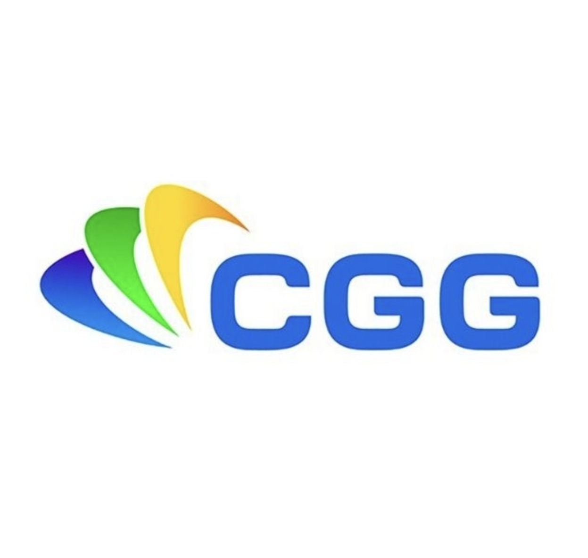

Stephanie Rochelemagne
CTO | Technology & Product Leader
Bilingual CTO (US/French) with 13 years scaling a SaaS platform from startup through acquisition. Ruby on Rails, AWS, AI-enabled engineering, and distributed teams across continents.
Open to conversations with founders, CTOs, and recruiters about senior engineering leadership and fractional CTO engagements.
About Me
I am a technology leader with 23+ years of experience, including 13 years scaling a SaaS platform from early startup stages through successful acquisition.
As CTO, I define and execute long-term technology strategy, build and lead high-performing teams, and ensure operational excellence and reliability.
I focus on aligning engineering delivery with business goals, fostering a culture of ownership and collaboration, and continuously improving systems to support growth and stability.
Location: Eden, Utah, United States
Work Authorization: Authorized to work in the U.S.
Leadership Philosophy
I believe technology leadership is about clarity, accountability, and team ownership.
I strive to create environments where engineers can deliver with confidence, communicate openly, and solve complex challenges together.
I actively guide the adoption of AI-enhanced workflows, ensuring teams leverage emerging tools thoughtfully to improve productivity, quality, and long-term innovation capacity.
Selected Achievements
- 13 years scaling noCRM.io from early-stage startup through acquisition by Positive Group
- Sustained 99.99% uptime across distributed Rails/AWS infrastructure
- Reduced infrastructure costs 15-20% through architecture optimization
- Led migration from managed PaaS (Engine Yard) to self-managed AWS with full IaC
- Bilingual leadership across US and French engineering cultures
- Independent iOS app developer (App Store published)
Experience
February 2013 - Present · Remote from Eden, UT
- Lead a distributed engineering team of 4 developers across France and the US, working asynchronously across time zones with strong delivery discipline and operational ownership.
- Architected and scaled the technology strategy from early-stage startup through acquisition by Positive Group, evolving the engineering organization over 13 years.
- Led full migration from managed PaaS (Engine Yard) to self-managed AWS with infrastructure-as-code (OpenTofu/Terraform), GitHub Actions deployment pipelines, and automated AMI builds.
- Engineered a reliability-first culture that achieved and sustained 99.99% uptime, supported by proactive monitoring, structured incident management, and a fully tested Disaster Recovery framework.
- Optimized infrastructure strategy and resource allocation, reducing operating costs by 15–20% while strengthening system performance and scalability.
- Drive organizational adoption of AI-enabled engineering practices: evaluated leading AI coding tools, selected and rolled out Claude Code across the team, and trained engineers on AI-assisted development workflows including code review and testing.

Project Leader
CGG VeritasJanuary 2002 - June 2012 · Houston, Texas
- Led global deployment of Kereon data management software
- Analyzed requirements, trained users, delivered new features
- Developed applications in Java and C++
Side Projects & Independent Work
Rewards Card Wallet (iOS)
2024 – Present
Solo-developed loyalty card and Apple Wallet app published on the App Store. End-to-end ownership: iOS development, App Store optimization, marketing site, localization (English/French), and ongoing feature development.
Skills & Technologies
Leadership & Strategy
Cloud Platforms
DevOps & Infrastructure
AI & Engineering Excellence
Monitoring & Observability
Datastores & Performance
Education
Master Degree Equivalent
Computer Science Applied to Geology2000 - 2001
University Pierre et Marie Curie - Paris, France
Master Degree Equivalent
Underground Water: Physical and Chemical Hydrogeology1999 - 2000
University Joseph Fourier - Grenoble, France
Bachelor Degree Equivalent
Geology and Geophysics1995 - 1999
University of La Rochelle - La Rochelle, France
Languages
Get in Touch
Or email me directly: stephanie@rochelemagne.com
Connect on LinkedIn